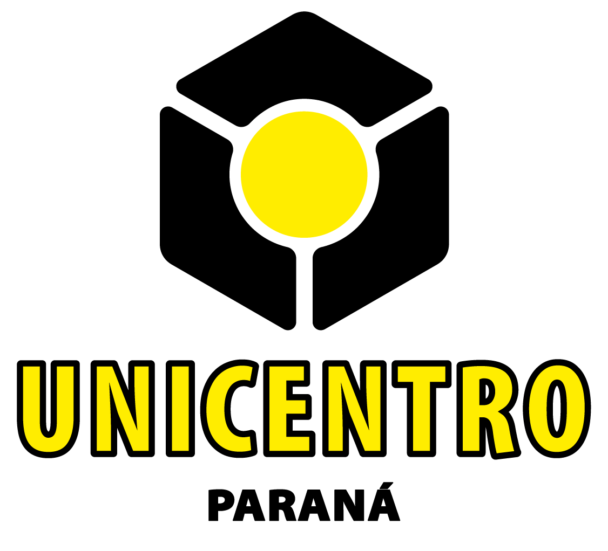
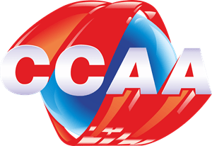
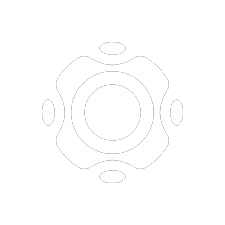
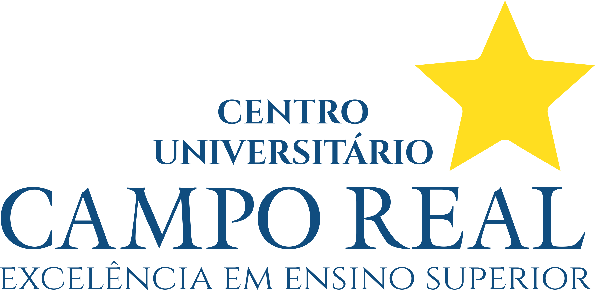
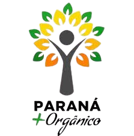
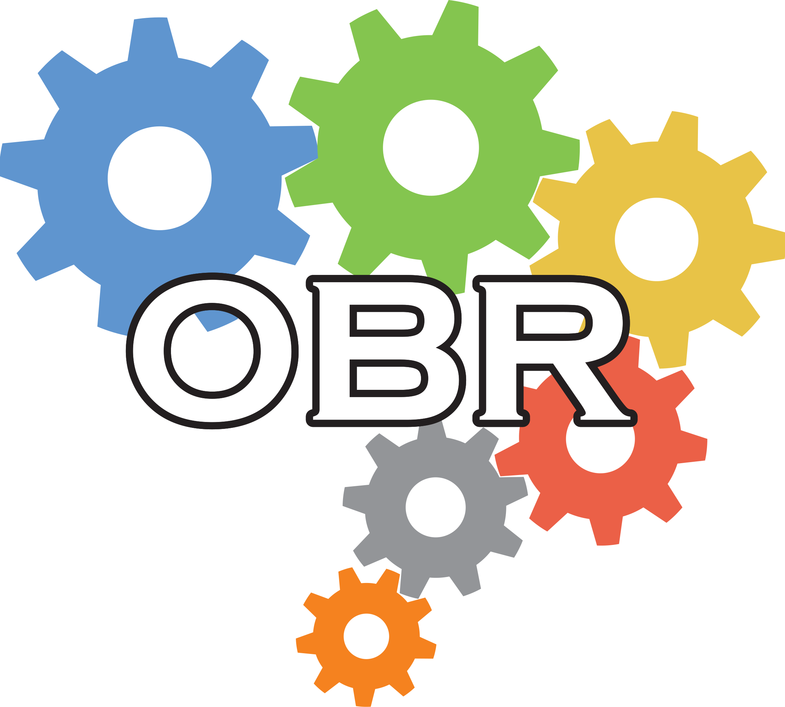

Formação Acadêmica
- Bacharelado em Ciência da Computação (em andamento) | jul 2021 - dez 2026 Universidade Estadual do Centro-Oeste - UNICENTRO

Formação Complementar
- Curso de Inglês | 2016 - 2021 Centro Cultural Anglo-Americano (CCAA) Guarapuava-PR
- Bacharelado em Agronomia (incompleto) | 2018 - 2021 Universidade Estadual do Centro-Oeste - UNICENTRO Guarapuava-PR
- Curso de Robótica | 2013-2015 Optimus Creative and Technology School Guarapuava-PR


Experiência Profissional
- Estágio de Desenvolvimento - CIEE
| Centro Universitário Campo Real (2024)
- Resolução de problemas técnicos em sistemas e equipamentos eletrônicos.
- Auxílio aos alunos, professores e funcionários em questões relacionadas a área de TI.
- Iniciação Científica (Voluntária)
| Universidade Estadual do Centro-Oeste - UNICENTRO
Guarapuava-PR
- Tema: Produtos alternativos para o controle de requeima na produção orgânica de batata a campo.
- Extensão em atuação no Programa Paraná Mais Orgânico
| Universidade Estadual do Centro-Oeste - UNICENTRO
Guarapuava-PR
- Programa Institucional de Ações Extensionistas.
- Extensão em Certificação de Produtos Orgânicos
| Universidade Estadual do Centro-Oeste - UNICENTRO
Guarapuava-PR
- Programa Institucional de Ações Extensionistas.



Conquistas
- Campeão Paranaense - Olímpiada Brasileira de Robótica - Etapa Paraná (OBR 2013)
- 8o Lugar Nacional - Olímpiada Brasileira de Robótica (OBR 2013)
